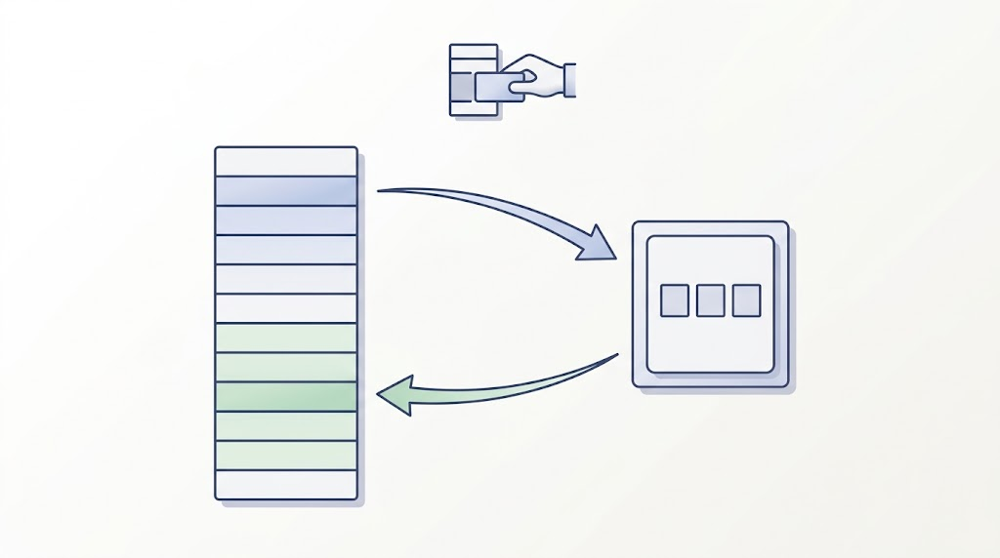

このページで学ぶこと
- 「CPUは、命令を取り出す→読み解く→実行する、を繰り返す」と言える
- 「レジスタは値を置くだけ。計算はALU」と言える
1.まずイメージを掴む
料理では、レシピを1行読み、意味を考え、その作業をします。CPUも同じで、プログラムの命令を1つずつ読んで、その作業をします。
Lesson 02・03で見たゲート、半加算器、フリップフロップは、すべてCPUの部品です。このページでは、それらが組み合わさって命令を実行する様子を見ます。
2.なぜこの仕組みなのか
なぜ命令を主記憶に置くの？
初期のコンピュータは、仕事を変えるたびに配線を差し替えていました。命令をデータと同じように主記憶に置けば、中身を書き換えるだけで別の仕事ができます。これをプログラム内蔵方式（ノイマン型）と呼び、今のPCもスマホもこの方式です。

なぜ役割を分けるの？
料理なら、冷蔵庫（しまう）・まな板（作業中の物を置く）・包丁（切る）・料理長（指示する）と役割が分かれています。CPUも、置く・計算する・指示するを別々の回路に任せることで、単純な部品の組合せで動けます。
3.仕組みを理解する
CPUの中の3つの役割
| 部品 | 役割 | 料理なら | 中身 |
|---|---|---|---|
| 制御装置 | 命令を読み解き、指示を出す | 料理長 | ゲートの組合せ |
| 演算装置（ALU） | 計算する（覚えない） | 包丁 | 半加算器など（Lesson 03 Lab 1） |
| レジスタ | 値を置く（計算しない） | まな板 | フリップフロップ（Lesson 03 Lab 3） |
材料（データ）と手順（命令）をしまっておく冷蔵庫が、CPUの外にある主記憶です。
よくある誤解：レジスタは計算しません。レジスタの値をALUが計算し、その答えをどのレジスタに書くか（書かないか）を制御装置が決めます。
この教材で使う3つのレジスタ
| 名前 | 置いておくもの |
|---|---|
| PC プログラムカウンタ | 次に取り出す命令の場所（番地） |
| IR 命令レジスタ | 今取り出した命令 |
| ACC アキュムレータ | 計算に使う数や、計算の途中の結果 |
主記憶の番地は、箱の番号です。「10番地に12が入っている」なら、番号は10、中身は12です。命令LOAD 10は「10番地の箱の中身（12）を読む」という意味です。
取り出す → 読み解く → 実行する、を繰り返す

- 取り出す（フェッチ）：PCが示す番地から命令を読み、IRに置く。PCは次の番地へ進む。
- 読み解く（デコード）：制御装置が、何をする命令かを読み解く。
- 実行する：読む・計算する・書くを行う。答えは、クロックの合図でレジスタに書き込まれる（Lesson 03 Lab 3の「書き込む」）。
4.触ってみる
このLabで確かめること
足し算をしてもACC（レジスタ）が変わるだけで、主記憶に残るのは「保存する」命令を実行したときだけなこと。
進め方
- 「次の段階へ」を押して、1つめの命令（12を読む）を3段階で進める。
- 2つめの命令（7を足す）で、ACCと12番地の中身を比べる。
- 3つめの命令（保存する）で、12番地に19が入るのを確かめる。
小さなプログラムを1段階ずつ動かす
予想：計算の答えが主記憶に残るのは、どの命令を実行したときでしょうか？
- 1. 取り出す
- 2. 読み解く
- 3. 実行する
光っている矢印が、今の段階で値が移った道です。矢印の上の数が、運ばれた値です。
命令の書き方（LOADなど）
LOAD 10：10番地の中身の数をACCへ読む。ADD 11：11番地の中身の数をACCに足す。STORE 12：ACCの数を12番地へ書く。HALT：プログラムを止める。
命令の後ろの数字は、すべて番地です。教育用の簡略モデルで、実際の命令はbit列で書かれ、作りもCPUによって違います。
5.試験ではこう問われる
- レジスタの役割（次に実行する命令の番地を置くのはPC、取り出した命令を置くのはIR）
- 命令の実行順（取出し→解読→実行）
- プログラム内蔵方式（ノイマン型）の特徴
ひっかけ注意：PCが置いているのは「今の命令」ではなく「次に」取り出す命令の番地です。LOADは主記憶→レジスタ、STOREはレジスタ→主記憶です。
学習を振り返る
覚えておく用語
- 制御装置
- 命令を読み解き、指示を出す
- 演算装置（ALU）
- 計算する回路。覚えない
- レジスタ
- CPUの中の値の置き場。計算しない
- PC
- 次に取り出す命令の番地を置く
- IR
- 取り出した命令を置く
- 番地（アドレス）
- 主記憶の箱の番号
- プログラム内蔵方式
- 命令もデータも主記憶に置く方式（ノイマン型）
できるようにすること
- 取出し・解読・実行の順を言える
- PC・IR・ACCに何が入るか言える
- LOADとSTOREの向きを言える
- レジスタとALUの役割の違いを言える